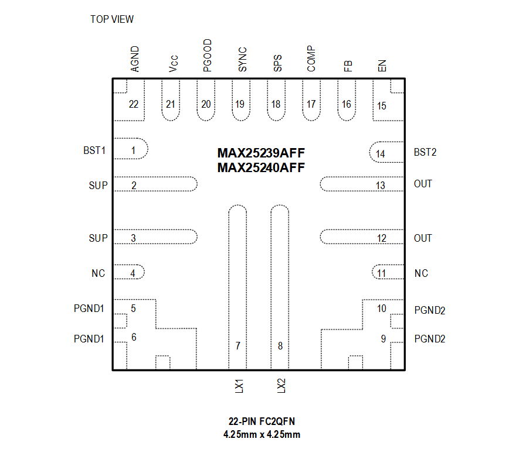
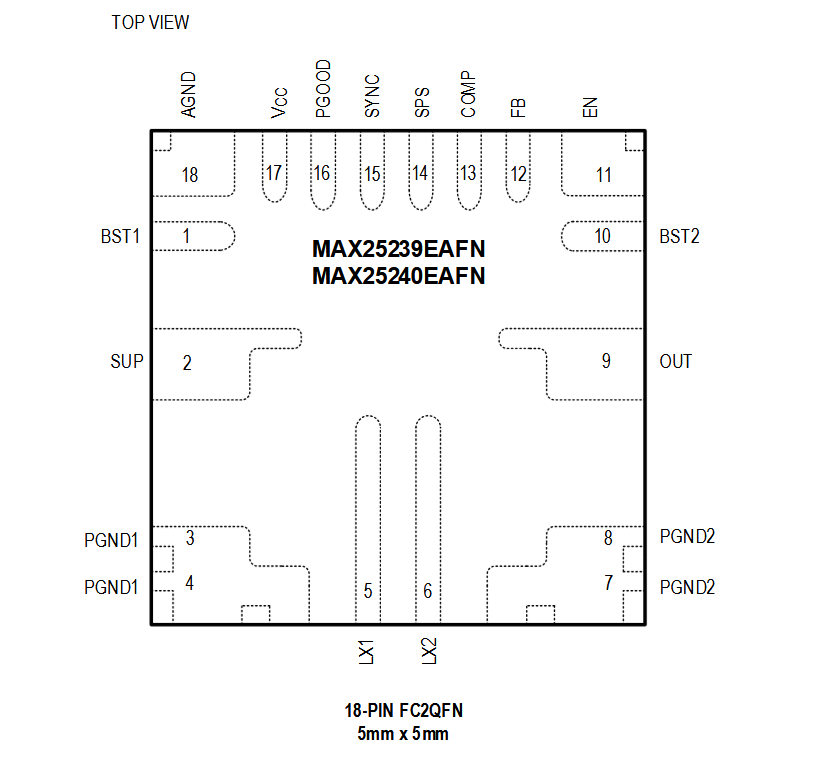

MAX25239AFF / MAX25240AFF

Pin Description
| PIN | NAME | FUNCTION |
|---|---|---|
| 1 | BST1 | Bootstrap Capacitor Connection for Switching Node LX1. Connect a 0.1μF ceramic capacitor between LX1 and BST1. |
| 2,3 | SUP | Power Supply of the Buck-Boost Converter and Internal VCC LDO Regulator. Bypass SUP to PGND1 with a 4.7μF or larger ceramic capacitor. |
| 4 | NC | Not connected |
| 5,6 | PGND1 | Power Ground Connection for Buck Low-Side FET LS1. Connect PGND1 and PGND2 together to power ground. |
| 7 | LX1 | Buck-Boost Converter Switching Node 1. Connect LX1 to one side of the power inductor. |
| 8 | LX2 | Buck-Boost Converter Switching Node 2. Connect LX2 to the other side of the power inductor. |
| 9,10 | PGND2 | Power Ground Connection for Boost Low-Side FET LS2. Connect PGND1 and PGND2 together to power ground |
| 11 | NC | Not Connected |
| 12, 13 | OUT | Buck-Boost Converter Output |
| 14 | BST2 | Bootstrap Capacitor Connection for Switching Node LX2. Connect a 0.1μF ceramic capacitor between LX2 and BST2 |
| 15 | EN | High-Voltage-Tolerant Enable Input. Drive EN high to enable buck-boost converter. |
| 16 | FB | Feedback Input. Connect FB to a resistor-divider between OUT and AGND to set the desired output voltage in the range of 3V to 20V. Connect FB to VCC for the fixed output voltage option. |
| 17 | COMP | Error Amplifier Output. Connect an RC compensation network between COMP and AGND to stabilize the control loop. |
| 18 | SPS | Spread-Spectrum (SPS) Function Enable Input. Connect SPS high to enable SPS function and low to disable SPS function |
| 19 | SYNC | External Clock Synchronization and Skip/PWM Mode Control Input. Connect SYNC to AGND to enable skip mode. Connect SYNC to VCC to enable PWM mode. Connect SYNC to a valid external clock to synchronize the buck-boost converter switching frequency to external clock. |
| 20 | PGOOD | Open-Drain Power-Good Indicator. Pull up PGOOD with an external resistor to VCC or a positive voltage lower than 5.5V to correctly indicate the OUT voltage status. PGOOD asserts low when the OUT voltage falls below 93% (typ) of its regulation voltage. PGOOD becomes high impedance when the OUT voltage rises above 94% (typ) of its regulation voltage. PGOOD is also low during soft-start and in shutdown |
| 21 | VCC | Internal 1.8V Regulator Output. Bypass VCC to ground with a minimum 4.7μF ceramic capacitor. |
| 22 | AGND | Analog Ground. Connect AGND, PGND1, and PGND2 together at a single point in a star- ground connection. |
MAX25239EAFN / MAX25240EAFN

Pin Description
| PIN | NAME | FUNCTION |
|---|---|---|
| 1 | BST1 | Bootstrap Capacitor Connection for Switching Node LX1. Connect a 0.1μF ceramic capacitor between LX1 and BST1. |
| 2 | SUP | Power Supply of the Buck-Boost Converter and Internal VCC LDO Regulator. Bypass SUP to PGND1 with a 4.7μF or larger ceramic capacitor. |
| 3,4 | PGND1 | Power Ground Connection for Buck Low-Side FET LS1. Connect PGND1 and PGND2 together to power ground. |
| 5 | LX1 | Buck-Boost Converter Switching Node 1. Connect LX1 to one side of the power inductor. |
| 6 | LX2 | Buck-Boost Converter Switching Node 2. Connect LX2 to the other side of the power inductor. |
| 7,8 | PGND2 | Power Ground Connection for Boost Low-Side FET LS2. Connect PGND1 and PGND2 together to power ground |
| 9 | OUT | Buck-Boost Converter Output |
| 10 | BST2 | Bootstrap Capacitor Connection for Switching Node LX2. Connect a 0.1μF ceramic capacitor between LX2 and BST2 |
| 11 | EN | High-Voltage-Tolerant Enable Input. Drive EN high to enable buck-boost converter. |
| 12 | FB | Feedback Input. Connect FB to a resistor-divider between OUT and AGND to set the desired output voltage in the range of 3V to 20V. Connect FB to VCC for the fixed output voltage option. |
| 13 | COMP | Error Amplifier Output. Connect an RC compensation network between COMP and AGND to stabilize the control loop. |
| 14 | SPS | Spread-Spectrum (SPS) Function Enable Input. Connect SPS high to enable SPS function and low to disable SPS function |
| 15 | SYNC | External Clock Synchronization and Skip/PWM Mode Control Input. Connect SYNC to AGND to enable skip mode. Connect SYNC to VCC to enable PWM mode. Connect SYNC to a valid external clock to synchronize the buck-boost converter switching frequency to external clock. |
| 16 | PGOOD | Open-Drain Power-Good Indicator. Pull up PGOOD with an external resistor to VCC or a positive voltage lower than 5.5V to correctly indicate the OUT voltage status. PGOOD asserts low when the OUT voltage falls below 93% (typ) of its regulation voltage. PGOOD becomes high impedance when the OUT voltage rises above 94% (typ) of its regulation voltage. PGOOD is also low during soft-start and in shutdown |
| 17 | VCC | Internal 1.8V Regulator Output. Bypass VCC to ground with a minimum 4.7μF ceramic capacitor. |
| 18 | AGND | Analog Ground. Connect AGND, PGND1, and PGND2 together at a single point in a star- ground connection. |